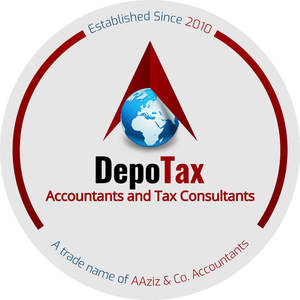

Trade Mark Journal No.2025/010 7 March 2025
UK00004160669 14 February 2025 (35,36)

- Class 35
- Advertising; business management; business administration; office functions; Accountancy ; Taxation (accountancy) consultancy; Tax consultancy (accountancy); Accountancy services; Taxation (accountancy) advice; Taxation (accountancy) consultation; Tax advice (accountancy); Chartered accountancy business services; Tax consultations (accountancy); Tax planning (accountancy); Accountancy advice relating to taxation; Accountancy, book keeping and auditing; Book-keeping and accounting; Book-keeping and accounting services; Accounting consultancy relating to taxation; Accounting; Tax return advisory (accountancy) services; Consultancy relating to tax accounting; Accountancy advice relating to tax preparation; Computerised accounting; Business accounting advisory services; Accounting, in particular book-keeping; Accountancy services relating to accounts receivable; Business auditing; Forensic accounting services; Business consultancy to firms; Consultancy regarding business organisation and business economics; Accounting services; Accountancy advice relating to the preparation of tax returns; Business organisation consultancy; Business administration consultancy; Consultancy relating to auditing; Accounting advisory services; Book-keeping; Business advice relating to accounting; Business consultancy (Professional -); Bookkeeping; Consultancy (Professional business -); Professional business consultancy; Financial auditing; Business consultancy; Business organisation and management consultancy; Business consultancy services relating to insolvency; Business management and organisation consultancy; Business management organisation consultancy; Computerised accounting (Preparation of -); Consultancy relating to business organization; Administrative accounting; Management accounting; Recruitment consultancy for legal secretaries; Business recruitment consultancy; Business management and organisation consultancy services; Professional consultancy relating to business management; Consultancy relating to business management and organization; Computerised auditing; Provision of information relating to accounts (accountancy); Professional business consultancy services; Business organisation consulting; School fee accounting services; Business appraisal consultancy; Business management consultancy; Business management and consultancy; Consultancy and information services relating to accounting; Computerised book-keeping; Business secretarial services; Veterinary practice business management; Business consultancy and advisory services; Business advisory and consultancy services; Computerised tax assessments (preparation of -) (accounting); Business organisation and management consulting; Computerized accounting services; Business consultancy services; Accounting services relating to tax planning; Business management consultancy and advisory services; Consultancy and advisory services for business management; Business advice and consultancy relating to franchising; Consultancy and advisory services relating to business management; Business organisation and management consulting services; Business management and consultancy services; Consultancy relating to business management; Consultancy relating to business advertising; Business management consultancy services; Business management consultancy in the field of corporate travel; Consultancy relating to the preparation of business statistics; Corporate management consultancy; Business marketing consultancy; Corporate management consultancy services; Professional consultancy relating to marketing; Business organisation advice; Computerised accounting (Maintenance of -); Advisory services relating to business organization; Advisory services relating to business organisation and management; Business planning consultancy; Consultancy relating to business efficiency; Assistance and consultancy relating to business management and organization; Business advice relating to financial re-organisation; Consultancy relating to business analysis; Advisory and consultancy services relating to import-export agencies.
- Class 36
- Taxation consultancy services (not accounting); Tax consultancy (not accounting); Corporate finance consultancy; Professional consultancy relating to finance; Accounting consultation; Financial consultancy; Consultancy (Financial -); Financial consultancy and insurance consultancy; Consultancy services relating to corporate finance; Tax returns consultancy (not accounting); Stockbroking; Consultancy services relating to finance; Financial consultancy services; Tax services (not accounting); Financial consultancy and advisory services; Financial advisory and consultancy services; Consulting services relating to corporate finance; Computerised financial advisory services; Pensions consultancy; Financial advice and consultancy services; Advisory services relating to corporate finance; Financial consultancy in the energy sector; Financial analysis and consultancy; Tax advice (not accounting); Actuarial consulting and advisory services.
AAziz & Co